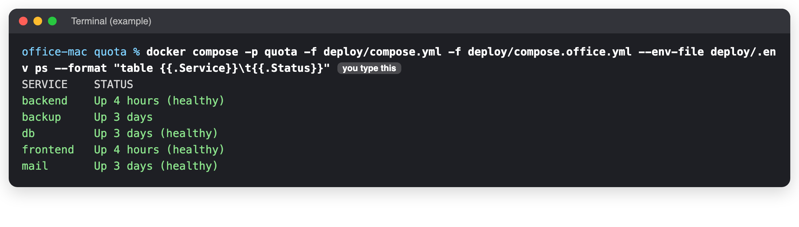
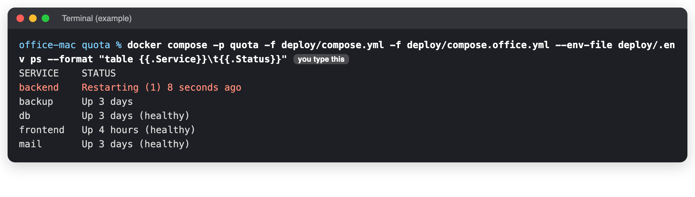
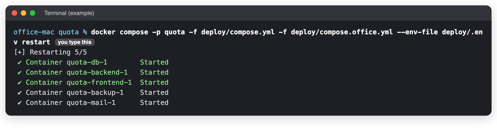
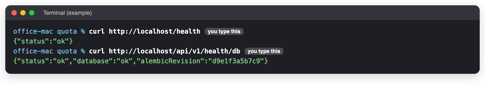

The site is down: first five minutes
When to use this: Staff cannot open Quota, or every page shows errors. Time it takes: 5 minutes to find the cause You need: The Terminal on the office Mac (connect if you are not at it).
Stay calm, change one thing at a time
The data is safe in the database. Most problems are fixed by a restart. Do not delete anything.
1. Is it Quota, or the way in?
Ask someone in the office to open Quota on the office network. If it works there but not from home, the problem is the tunnel, not Quota: go to How staff and clients reach it.
2. Go to the Quota folder
cd ~/quota
If this says No such file or directory, you are not on the office Mac. See Connect to the server.
3. Which box is in trouble?
docker compose -p quota -f deploy/compose.yml -f deploy/compose.office.yml --env-file deploy/.env ps --format "table {{.Service}}\t{{.Status}}"

A box in trouble says Restarting, Exited or unhealthy, or is missing from the list:

4. Match what you see
| You see | What it means | Do this |
|---|---|---|
Cannot connect to the Docker daemon |
OrbStack, the app that runs the boxes, is closed | The office Mac |
| Every box says Up, but the site does not load | The boxes are fine; it is the way in | How staff and clients reach it |
db is not running |
The database stopped | Do step 5. Check the disk with df -h /. If it will not start: Restore |
backend keeps restarting |
Often the database is down, or a setting is wrong | Do step 5, then read its messages (step 6) |
| Pages load, but actions give 502 | The website cannot reach the backend | Do step 5 |
| Staff see a plain 403 page | A test server took Quota's port | Tell the developer. Do not stop the live boxes. |
| One feature fails: a PDF, an e-mail, a picture | Not the whole site | Common errors |
| It broke right after a release | The new version | Go back to an earlier version |
| The Mac does not answer at all | Off, or the network is down | The server is gone |
5. Restart (keeps all data)
docker compose -p quota -f deploy/compose.yml -f deploy/compose.office.yml --env-file deploy/.env restart

Wait one minute, then do step 3 again. If a box is still in trouble, stop it all and start it again:
docker compose -p quota -f deploy/compose.yml -f deploy/compose.office.yml --env-file deploy/.env down
docker compose -p quota -f deploy/compose.yml -f deploy/compose.office.yml --env-file deploy/.env up -d
Never add -v to down
down -v erases the database.
6. Still broken? Read the messages
docker compose -p quota -f deploy/compose.yml -f deploy/compose.office.yml --env-file deploy/.env logs --tail=100 backend
Copy the last 30 lines and send them to the developer.
Check it worked
curl http://localhost/health
curl http://localhost/api/v1/health/db

Then sign in and open an order.
After it is fixed
- Write down what happened, what you did, and the times.
- Tell the team it is back.
Last checked: 2026-11-11